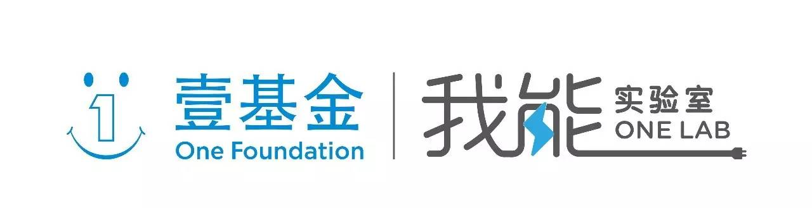

种子成长营 | 儿童性教育课堂开课啦
以下文章来源于不羞学堂 ，作者不羞学堂
为全国范围内任何有意向从事于儿童性教育工作的老师、社工、志愿者提供网络在线培训。
不羞学堂致力于搭建儿童性教育线上学习平台，为全国范围内任何有意向事于儿童性教育的老师、社工、志愿者提供在线培训。
如何加入
活动详情
培训摸底测试：
在完成报名审核之后，申请用户将会收到一份自动回执邮件，鼓励大家在不借助参考资料和网络搜索的情况下独立完成摸底测试，真实了解自己的系统知识掌握情况，方便之后更好的查漏补缺，及时补充知识盲点。
因为我们永远不会知道，我们的小朋友下一个问到我们的问题会是哪一个？
基础知识自学：
1、完成摸底测试之后，我们将会分享摸底测试的结果解析。
2、阅读不羞学堂儿童性教育系列参考资料和推荐阅读图书。
3、观看课程实录视频。
4、学员可以在此期间通过自主学习及线上社群讨论完成儿童性教育系统知识的补充。
5、每周五晚课程答疑，学员可就课程学习内容或主题提出问题或不理解的地方，督导在线提供针对性的帮助。

特邀嘉宾分享：
想要做好儿童性教育，只看完参考书目当然还是远远不够的，我们将会定期给入选的不羞学堂种子学员开设线上公开课程，和大家一起分享儿童性教育的一些基本理论和教学技巧，我们还会邀请一些专注于儿童性教育的公益组织项目负责人来给大家分享他们的一线实践经验。
分享主题
不羞学堂的课程到底教什么？男生女生要分开上吗？不同年龄的孩子上的内容一样吗？内容会不会太开放？如何避免孩子对性产生恐惧？万一上课孩子起哄怎么办？万一气氛很尴尬怎么办？遇到突发情况怎么办？孩子问的问题我不会怎么办？
第一次培训主题
主题：了解儿童性教育。
内容：
1、改变人们对儿童性教育的误解
2、了解儿童性教育对孩子的帮助
3、儿童性教育应该基于什么样的理念
4、儿童性教育如何适宜的走进落后地区
时间：2016年8月16日 20:00—21:00
地点：微信讨论组
流程：40分钟嘉宾分享，20分钟提问交流
分享人：胡佳威，保护豆豆儿童性教育老师。拥有5年青少年性教育经历，曾担任江苏省地区高校同伴教育主持人培训师、无锡市国家级青春健康项目的项目经理，为全省范围内超过50所高校提供性教育TOT培训。
第二次培训主题
主题：熟悉儿童性教育课程
内容：
1、对课程前测进行解答
2、介绍6个主题的课程内容及知识点
3、分享课程开展技巧，如热身、增加课程互动、提高孩子参与性、如何应对课堂突发情况
4、儿童性教育课程实录视频观看
时间：2016年8月19日 20:00—21:00
地点：微信讨论组
流程：40分钟嘉宾分享，20分钟提问交流
分享人：胡佳威，保护豆豆儿童性教育老师。拥有5年青少年性教育经历，曾担任江苏省地区高校同伴教育主持人培训师、无锡市国家级青春健康项目的项目经理，为全省范围内超过50所高校提供性教育TOT培训。
有其他地方成功开展儿童性教育课程的吗？他们是怎么做到的？他们遇到了什么问题？他们又是怎么解决的？
为此，不羞学堂邀请了儿童性教育领域一线的老师，邀请他们来和大家分享，他们是如何在当地开展儿童性教育的。
第三次培训主题
主题：开展儿童性教育的情况
内容：
1、学校为什么愿意开展性教育课
2、性教育课堂遇到问题怎么解决
3、开展性教育课堂的经验分享
时间：2016年8月23日 20:00—21:00
地点：微信讨论组
流程：40分钟嘉宾分享，20分钟提问交流
分享人：胡玉鹏，湖南衡阳祁东县乡中学的一名生物老师，曾参加玛丽斯特普青年性教育工作者培训项目“青年先锋”，并在当地多所小学、初中开展过多场性教育课程。
第四次培训主题
主题：开展儿童性教育课堂的相关问题
内容：
1、如何提高儿童性教育课堂质量相关的问题
2、如何从孩子的角度准备材料并进行讲解
3、儿童性教育教师的自身要求
时间：2016年8月26日 20:00—21:00
地点：微信讨论组
流程：40分钟嘉宾分享，20分钟提问交流
分享人：王舜，毕业于北京师范大学心理学院，毕业后进入北京师范大学儿童性教育课题组，从事儿童性教育的课程研发、教师、志愿者培训、教学效果评估等工作。
在2013年-2014学年带领近300名志愿者在北京市7所流动儿童学校开展性教育课程，并取得良好的教学效果。
第五次培训主题
主题： 如何避免性安全课使孩子更害怕性
内容：
1、儿童性侵害案件的隐蔽性
2、农村儿童的性现状
3、儿童性教育的目标
4、教孩子如何保护自己
时间：2016年8月30日 20:00—21:00
地点：微信讨论组
流程：40分钟嘉宾分享，20分钟提问交流
分享人：张新宇，2009-2012年就读于美国南加州大学社会工作专业。2012年起，就职于北京农家女文化发展中心，负责留守儿童性安全项目。
曾主导执行过：联合国留守儿童性侵犯预防项目，联劝儿童性安全项目，农村妇女赋权项目等。
参与编写：农村中小学青春期教育读本，及一系列农村性教育培训教师、学生、监护人手册。
第六次培训主题
时间：2016年9月3日 20:00—21:00
地点：微信讨论组
流程：40分钟嘉宾分享，20分钟提问交流
分享人：神秘嘉宾
种子福利
1、赠送不羞学堂终身会员，免费观看平台所有付费视频与资料
2、全年10+专题直播课程
3、全年20+次金牌导师一对一答疑解惑
4、不羞学堂线下活动优先参与权
报名方式
点击文末“阅读原文”或扫描下方二维码即可报名。
报名表审核通过后会有工作人员与您联系，沟通付费事宜
微信小助手：weiyuhao007或扫描下方二维码
（加入时请备注：种子成长营+姓名）
